Git版本管理工具实践
| 时间段 | 教学环节 | 核心目标 | 关键技术栈 |
|---|---|---|---|
| 0-30’ | 模块一：理论导入与环境准备 | 理解Git版本控制的核心概念，完成Git安装与基础配置。 | Git, Gitee, SSH密钥 |
| 30-70’ | 模块二：仓库创建与基本操作 | 掌握Gitee仓库创建、克隆、提交、推送等基本操作。 | Git Bash, 命令行操作 |
| 70-110’ | 模块三：IDE集成与可视化操作 | 学会在IDEA和VSCODE中使用Git进行可视化操作。 | IDEA, VSCODE, Git GUI |
| 110-150’ | 模块四：分支管理与冲突消解 | 掌握分支创建、合并、冲突解决的核心流程。 | 分支策略, 冲突消解 |
| 150-190’ | 模块五：团队协作与代码审查 | 理解团队协作流程，掌握Pull Request与代码审查。 | Gitee PR, 代码审查 |
| 190-240’ | 模块六：综合实战与结课 | 完成综合实战项目，构建完整的Git工作流。 | 实战项目, 版本管理 |
git工具官方网站：
https://git-scm.com/在线代码仓库：
https://github.com/（境外）
https://gitee.com/（境内）离线代码仓库：
https://gitlab.com/git一直服务于团队合作的最前沿，但是作为个人开发者使用git工具管理自己的代码和文件也具有非凡的意义。
版本控制和备份：管理代码的不同版本，可随时恢复到以前的工作状态，避免数据丢失。选择长期且稳定的在线代码仓库至关重要。
学习和成长的激励机制：通过查看提交历史，个人开发者可以反思和学习自己的代码变更，了解哪些改动带来了积极或消极的影响。
学习专业化工作流程：使用Git可以帮助个人开发者养成专业的软件开发习惯，如定期提交、撰写详细的提交信息等，这对职业发展非常有帮助。
共享和协作：即使是个人项目，开发者也可以使用Git轻松地与其他人共享代码，接受建议和反馈，提升项目质量。
https://gitee.com/在本次短学期实习中，我们选择Gitee为例子。
首先我们需要注册Gitee账号。然后进入
个人主页 -> 个人设置 -> 邮箱管理 选项中。
作为重要的第一步，我们需要配置提交邮箱。
默认情况下，提交邮箱
在git中扮演身份识别的角色。如下：
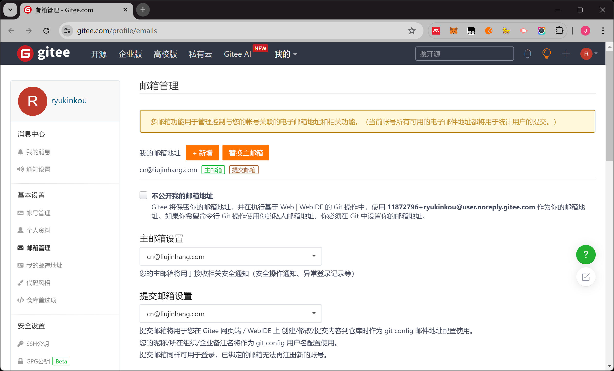
在开始使用Git之前，我们需要先进行Git的基础配置。打开命令行终端（Windows使用Git Bash，macOS使用Terminal），执行以下命令配置身份信息：
# 配置用户名
git config --global user.name "你的真实姓名"
# 配置提交邮箱
git config --global user.email "你的邮箱@example.com"
# 配置默认分支名
git config --global init.defaultBranch master为了实现安全的免密通信，Git提供了两种主要的认证方式：SSH密钥认证（推荐）和用户名密码认证。
SSH密钥认证是一种更安全、更便捷的认证方式，无需每次输入密码。
ssh-keygen -t ed25519 -C "你的邮箱@example.com"查看并复制公钥：
cat ~/.ssh/id_ed25519.pubcat ~/.ssh/id_ed25519.pub在Gitee中添加公钥：进入 Gitee
个人设置 -> SSH公钥，将复制的公钥内容粘贴进去并保存。
测试连接：在命令行中执行：
ssh -T git@gitee.com如果提示 Welcome to Gitee.com, 你的用户名!
说明配置成功。
如果不想配置SSH密钥，也可以使用用户名密码进行认证。
个人设置 -> 安全设置 -> 个人访问令牌生成新令牌，勾选必要的权限（projects、user_info等）https://gitee.com/用户名/仓库名.git注意：密码认证存在安全风险，推荐使用SSH密钥认证方式。
随后，通过右上角菜单打开新建仓库页面。
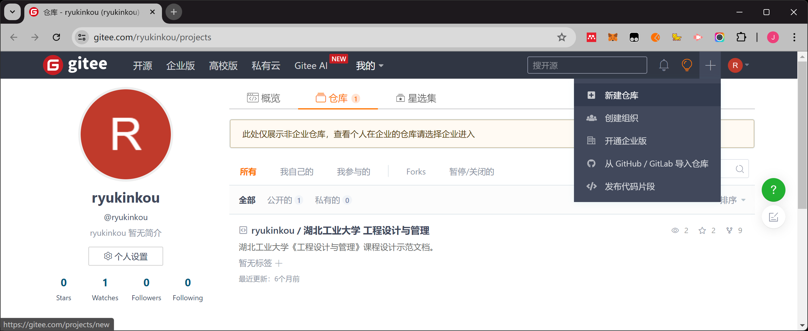
根据自己的需求填写仓库名称、路径等信息。
仓库创建完成后，会返回一个用于管理该仓库的地址信息。复制该信息。

下载并安装git工具与Intellij IDEA。
检查git工具在IDEA中的配置是否完备。
进入IDEA的Settings界面（通过左侧菜单Customize -> All Settings进入）。
打开Version Control -> Git。
在Path to Git executable文本框中，找到并填入git.exe的位置。点击Test按钮。

回到启动页，选择Get from Version Control。
输入刚才我们复制的仓库地址信息。点击Clone。

至此，我们已经完成了在IDEA中配置连接在线代码仓库的过程。
在提交代码之前，我们需要创建 .gitignore
文件，用于自动排除不需要提交到仓库的文件。
.gitignore文件告诉Git哪些文件或目录不需要被版本控制。这可以避免将IDE配置文件、依赖库、编译产物等提交到仓库，保持仓库的清洁。
在项目根目录创建 .gitignore
文件，内容如下（以Java项目为例）：
# Java编译产物
*.class
*.jar
*.war
*.ear
target/
# IDE配置文件
.idea/
*.iml
*.iws
*.ipr
.vscode/
.vs/
*.suo
*.user
# 操作系统文件
.DS_Store
Thumbs.db
# 依赖库
lib/
*.dll
*.so
*.dylib
# 日志文件
*.log
logs/可以根据项目类型选择合适的.gitignore模板，例如： - Python项目：添加
__pycache__/, *.pyc, venv/ -
Node.js项目：添加 node_modules/, npm-debug.log
- C/C++项目：添加 *.o, *.obj,
bin/, build/
.gitignore 文件.gitignore 文件提交到仓库这样，Git会自动忽略这些文件，不会将它们提交到仓库。
接下来，我们完成将本地代码提交到代码仓库的过程。
首先，我们创建并完成一个文件。在本次实践中，我们创建并使用一个README.md文件作为例子。
文件的颜色会发生一些变化，白色代表文件与仓库相等，绿色代表新追加的文件，蓝色代表该文件被修改过。
初次创建文件时，会弹出一个对话框，如下。选择Add。

在我们创建的文件上面，点击右键，选择Git -> Commit File。
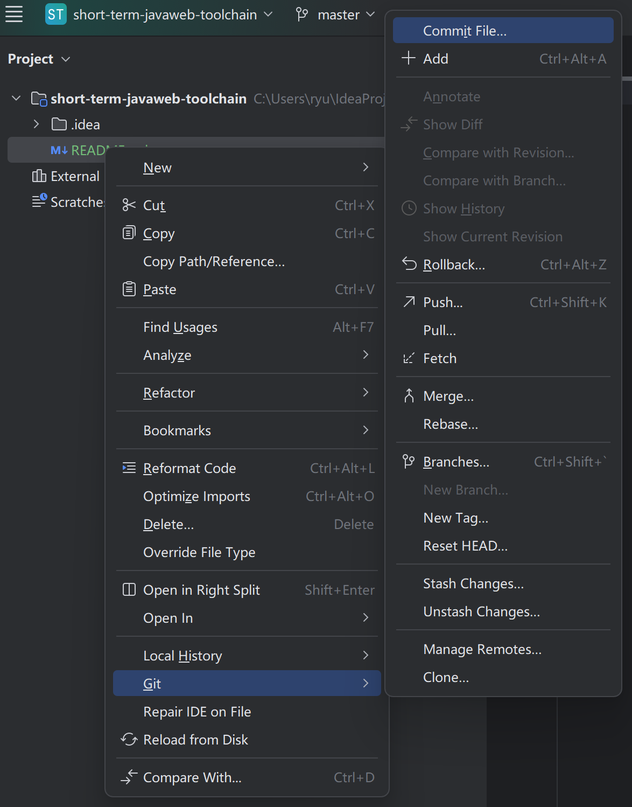
进入Commit界面后，检查我们需要提交的文件。
为了保证在线仓库的纯洁性，我们只提交和程序和代码相关的文件进入仓库。
而且尽量不要提交过大的文件。管理大文件并不是git工具所擅长的。
比如一些IDE的配置文件之类的数据不要提交到仓库。
最后，不要忘记填写提交说明。
推荐使用约定式提交规范，使提交历史更加清晰可读：
格式：<类型>: <描述>
常用类型： - feat: 新功能 - 添加新功能 -
fix: 修复bug - 修复缺陷 - docs: 文档更新 -
仅修改文档 - style: 代码格式 - 不影响代码运行的格式修改 -
refactor: 重构 - 既不新增功能也不修复bug的代码修改 -
test: 测试相关 - 添加或修改测试代码 -
chore: 构建相关 - 构建流程或辅助工具的变动
示例：
feat: 添加用户登录功能
fix: 修复登录页面跳转错误
docs: 更新API文档
refactor: 重构用户认证逻辑良好的提交信息有助于团队协作和代码审查。
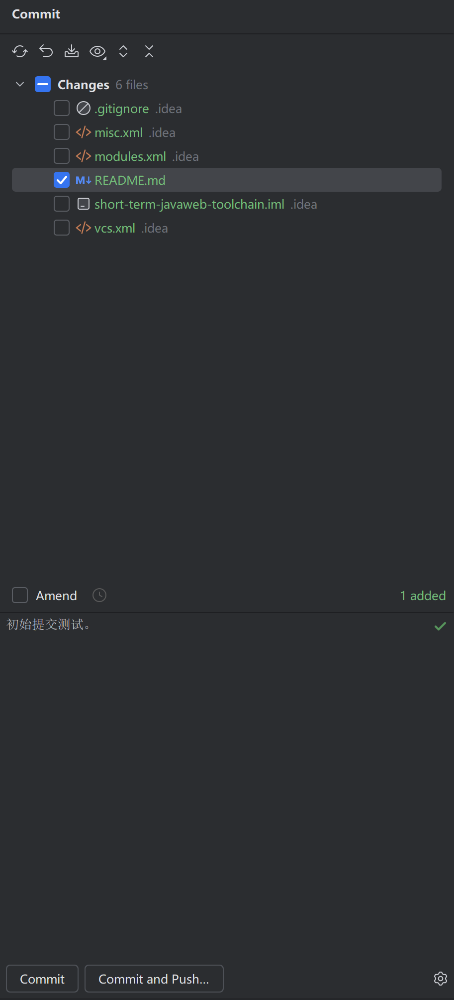
提交代码会改变仓库的内容，所以在这一步中需要验证你的身份。
身份验证方式：
根据你选择的认证方式，有两种验证方法：
如果使用SSH密钥认证：不需要输入用户名和密码，直接提交即可。 -
确保使用SSH地址克隆仓库：git@gitee.com:用户名/仓库名.git -
确保已正确配置SSH公钥
如果使用HTTP认证： - Username填写Gitee用户名 -
Password填写Gitee的个人访问令牌（PAT）或注册密码 -
确保使用HTTPS地址克隆仓库：https://gitee.com/用户名/仓库名.git
注意：密码认证存在安全风险，推荐使用SSH密钥认证方式。
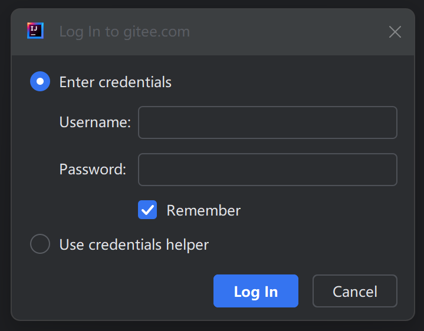
如果一切正常，IDE右下角会显示相关信息。
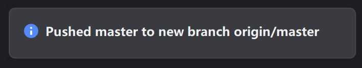
同时，在Gitee的网站上，也会显示相应的内容。
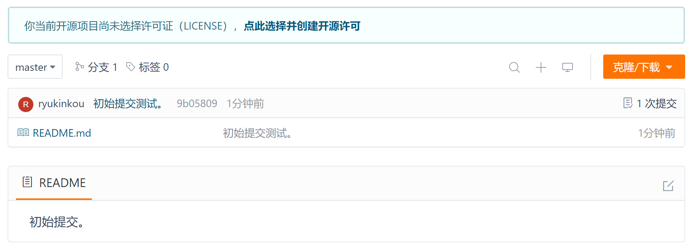

VSCODE的配置内容和流程基本一致。
首先，在左侧列表中切换到第三个按钮，代表版本管理。
然后，在顶部输入框中输入仓库地址。回车后开始克隆仓库内容。
此时，下载的仓库已经包含我们上面提交过的内容。

在本实践中，我们尝试在VSCODE中修改一下之前的README.md文档，用来测试VSCODE和在线仓库的配置是否完备。
切换回左侧第一个按钮，打开README.md文档，修改该文档，并保存。然后再次切换到第三个按钮处。
此时，被修改的文档被列在changes列表中，但Commit按钮尚未生效。
注意：这里和IDEA的流程稍微不一样，我们首先要点击文件右侧的+号，对修改进行暂存（Stage Changes）后才能提交。 这个过程在IDEA中自动完成了，但在VSCODE中需要我们手动完成。
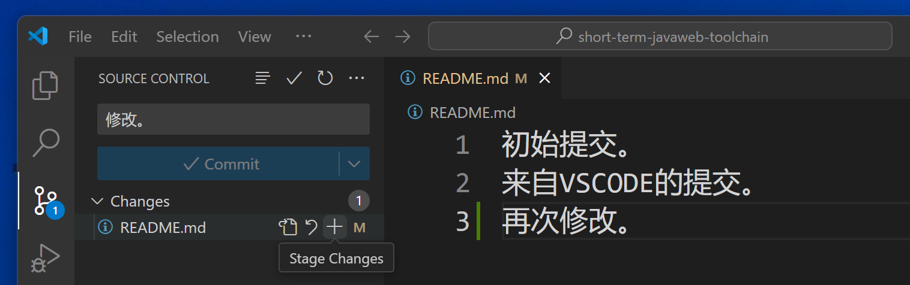
这个时候，Commit按钮生效，可以提交代码了。
注意：提交代码其实有2个过程，即Commit向本地仓库提交修改，Push将这个修改推送给在线仓库。
我们可以选择Commit & Push，一次性完成这2个流程。

同样的，在Push到在线仓库的时候，需要验证你的身份。根据你选择的认证方式：
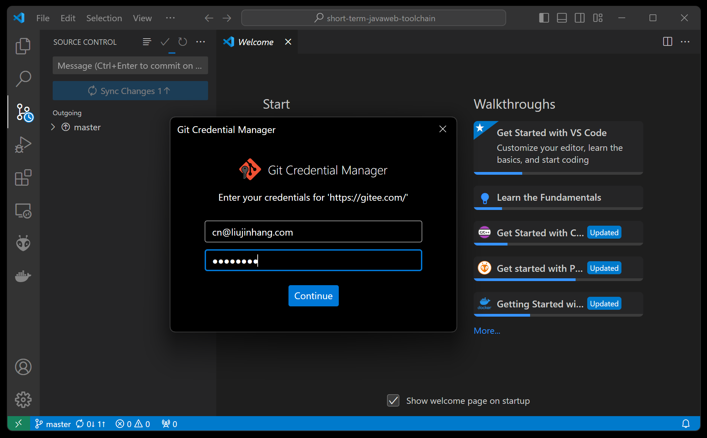
最后，检查一下在线仓库。
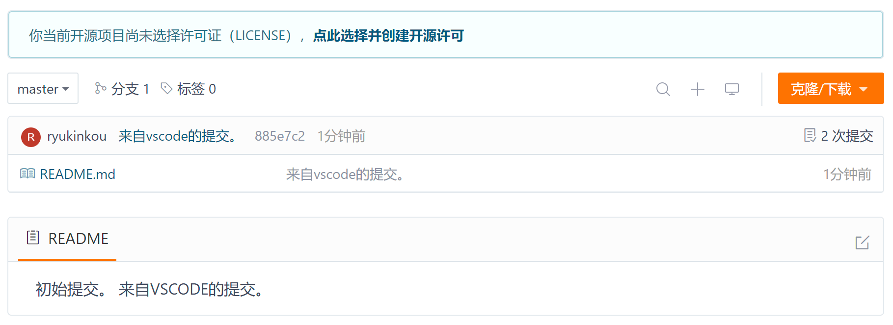
除了IDEA和VSCODE之外，市面上的绝大部分IDE都能够与git工具进行很好的连携，完成代码的版本管理工作，例如：
Android Studio

Visual Studio

等等。
除了IDE操作，了解Git命令行操作也很重要。以下是常用命令：
# 查看仓库状态
git status
# 查看提交历史
git log
# 查看简洁的提交历史
git log --oneline --graph --all
# 查看文件变更
git diff
# 查看已暂存的变更
git diff --cached
# 撤销工作区修改
git checkout -- <文件名>
# 撤销暂存
git reset HEAD <文件名># 查看所有分支
git branch -a
# 创建并切换分支
git checkout -b <分支名>
# 切换分支
git checkout <分支名>
# 删除本地分支
git branch -d <分支名>
# 查看分支合并图
git log --graph --oneline --all# 查看远程仓库
git remote -v
# 获取远程更新
git fetch
# 拉取并合并远程分支
git pull
# 推送本地分支到远程
git push origin <分支名>
# 删除远程分支
git push origin --delete <分支名>掌握这些命令可以帮助你更高效地使用Git。
在版本管理中，软件的各个版本的开发犹如一根根线段一样不停的向前发展。而master主线代表代码最健壮的，也是最初始默认的发展方向。
在上面的步骤中，我们演示了一种提交代码的方式，即向master主线直接提交代码的方式。
这种开发方式简单而直接，适合个人开发者完成个人产品。但也会带来一些风险和不确定性。
在团队开发或者开源软件开发中，通常我们采用：
创建分支（create branch） -> 基于分支开发 -> 发起合并请求（pull request） -> 合并分支到主线
的基于分支的开发流程。

推荐使用以下分支命名规范，使分支管理更加清晰：
feature/xxx # 新功能分支，例如：feature/user-login
bugfix/xxx # 修复bug分支，例如：bugfix/login-error
hotfix/xxx # 紧急修复分支，例如：hotfix/security-patch
release/xxx # 发布分支，例如：release/v1.0.0
develop # 开发主分支
master/main # 生产主分支示例： - feature/add-payment-method - 添加支付方式功能 -
bugfix/fix-null-pointer - 修复空指针异常 -
hotfix/critical-security-fix - 紧急安全修复
良好的分支命名有助于团队协作和版本管理。
以IDEA为例，默认情况下，我们在IDE中显示的是master主线代码，但是随着时间的发展，你的主线代码可能不再是最新的了。
这主要是因为你下载主线代码后，其他的小伙伴又更新了主线代码。
在创建新的分支的时候，我们首先要保证自身所拥有的代码为最新。
可以通过pull操作来完成。pull = fetch +
merge，即先获取远程更新，然后自动合并到本地分支。在本地代码没有修改的情况下，这是安全的。
如下：
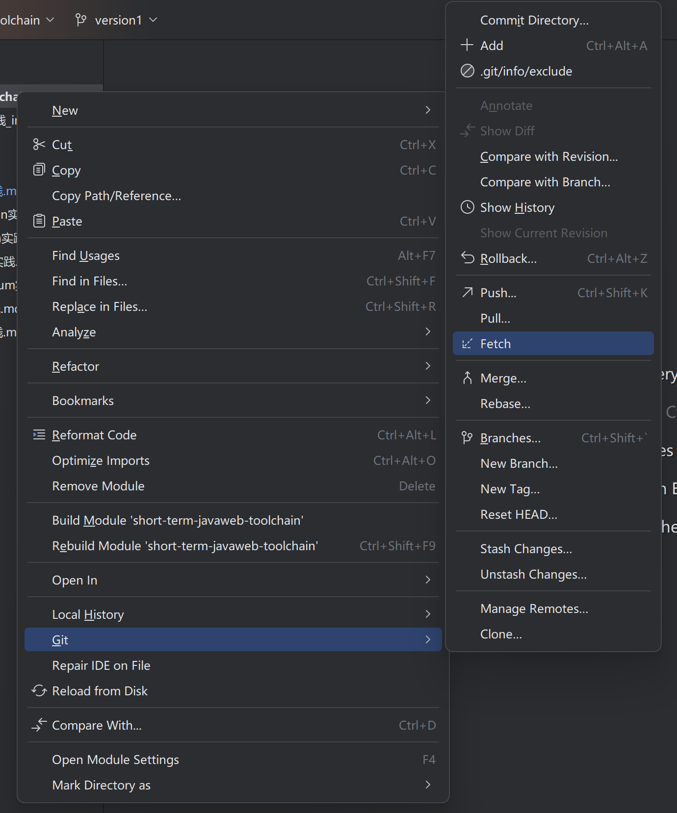
在同步了最新代码后，我们基于这个版本创建一个新的branch。
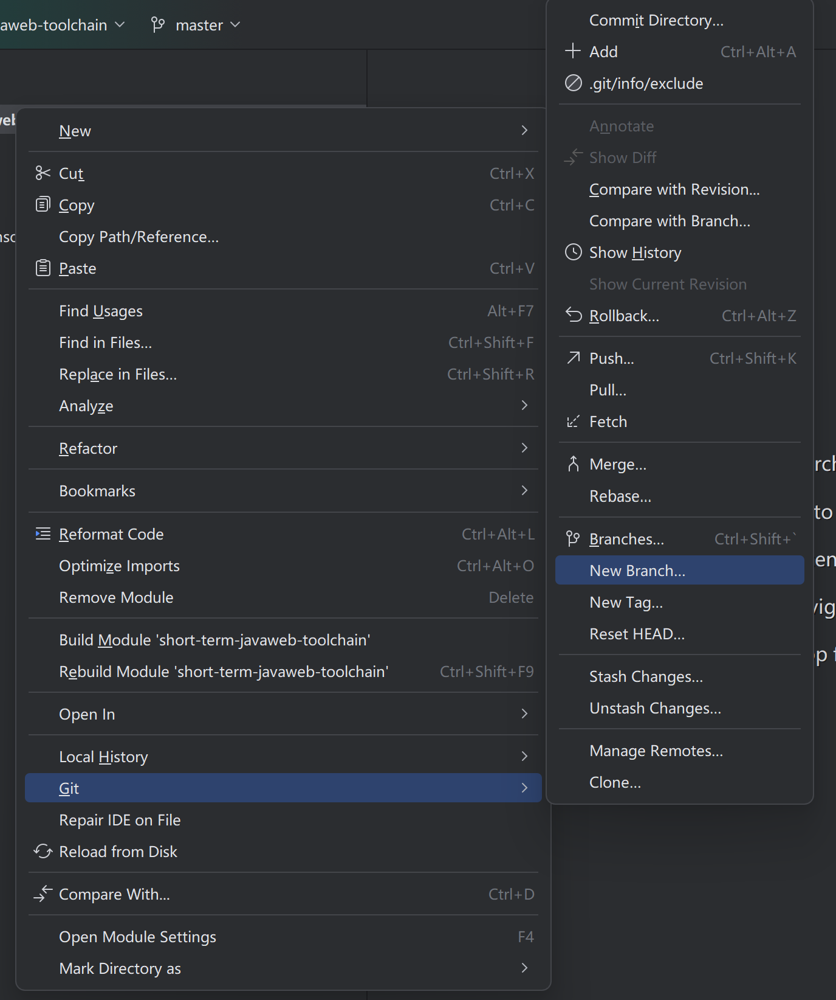
给这个分支一个名字，注意不要和现有的分支名冲突。
注意保持Checkout branch选项为选中，这样在分支创建后，IDE将自动切换到这个分支版本。
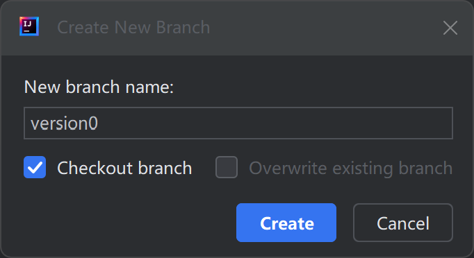
此时，我们可以看到，当前IDE的代码版本已经切换到了version0分支上。

至此，我们的新分支就创建成功了。
当我们在自己创建的分支辛勤工作并完成了任务后，那么还有最后一个步骤，就是将这个分支合并回master主线。让我们的贡献成为软件未来开发的基石。
首先，我们仍然像往常一样，提交代码到在线仓库，不过这次我们提交的对象是version0分支，而非master主线。
然后，我们发起一个Pull Request（合并请求），在Gitee中也称为Merge Request，告诉并请求管理者请合并version0的代码到master主线。
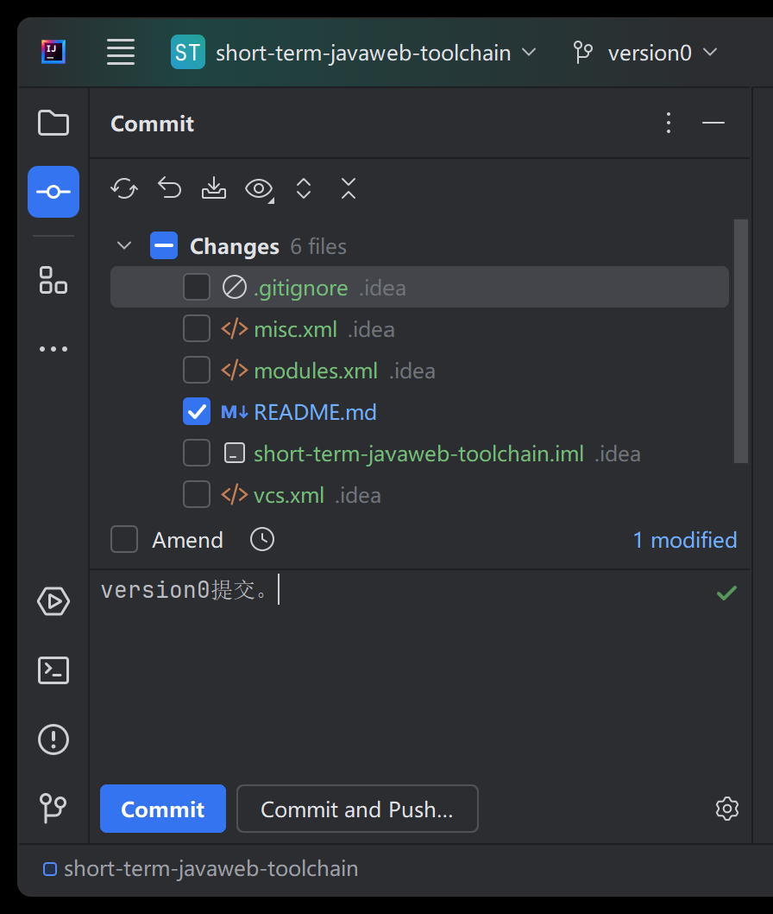
此时，我们切换到Gitee网站上，可以看到有如下信息：
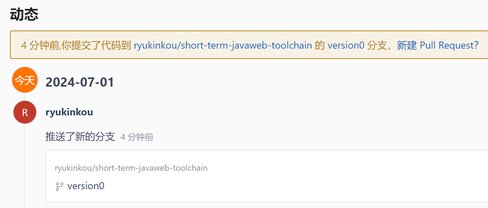
点击创建 Pull Request（合并请求），在接下来的界面中小心检查源分支与合并分支，确保没有错误。然后填写相应的描述信息。
最后点击创建 Pull Request（合并请求）按钮。
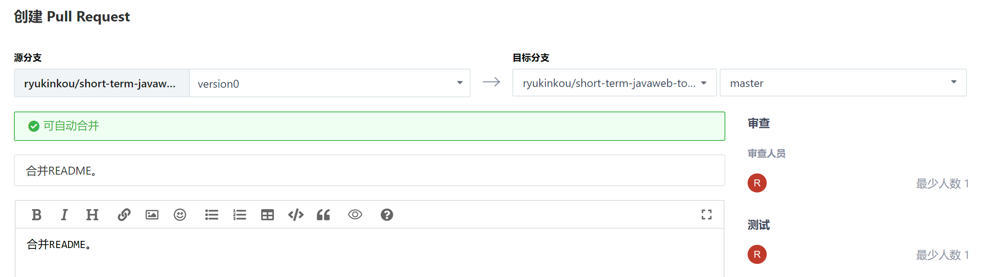
进入审核界面后，需要测试员和审核员分别审核代码，确保代码不会劣化（之前可以正常运行的测试用例，更新后不能运行的情况）。
代码审查是保证代码质量的重要环节，以下是审查清单：
代码审查通过后才能合并到主线。
因为本例中只有一个分支更新了代码，所以不会出现冲突的情况。而且因为我们的开发者只有一名，所以你需要兼任测试与审核。
审核和测试完成后，点击合并分支按钮完成代码合并。
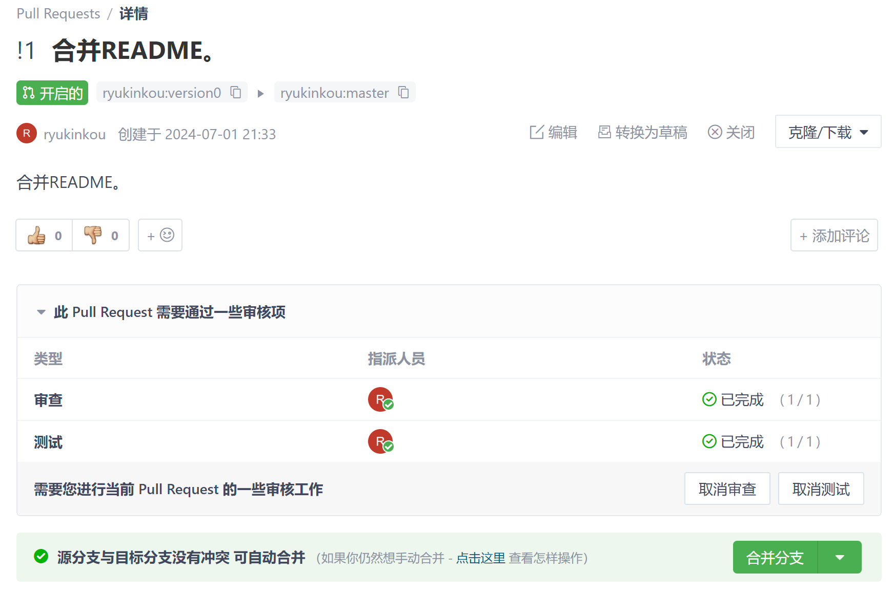
在刚才的例子中，我们描述了一种梦幻般的场景，即只有一名开发者开发，维护代码的情况，这种情况比较少见。
但在更多的场景中，将自己的分支合并到主线中的时候，难免会产生冲突。
因为是多人协作场景，所以你手上的基于master主线分叉出来的分支很快就会过期，别人添加了更多内容，甚至编辑了你正在编辑的文件。
当这样的代码尝试合并到master主线的时候，就会产生冲突。
例如，我们在创建version0的时候，同时创建了version1分支。
在刚才的version0流程中，我们对README.md文件做了修改，并最终将version0分支合并到了master主线中。
此时，version1分支的代码将会开始落后于master主线。
随后，我们同样修改了version1主线中的README.md文件，在其中添加了其他内容。

结束后，我们试图将version1分支内容合并到master主线中去。这是开发中非常常见的一种场景。
开发中一些共通的函数库、变量库，总是会被不同的开发小组同时修改。
但这样的合并将会产生冲突，这是git为了防止代码劣化的措施。
我们按照刚才的流程，Commit & Push
version1的代码到在线仓库。
然后切换到Gitee网站中，创建一个从源分支为version1，合并分支为master的Pull Request（合并请求）。
然后在评审的界面中，我们发现了这个合并产生了冲突（注意存在冲突红字）。
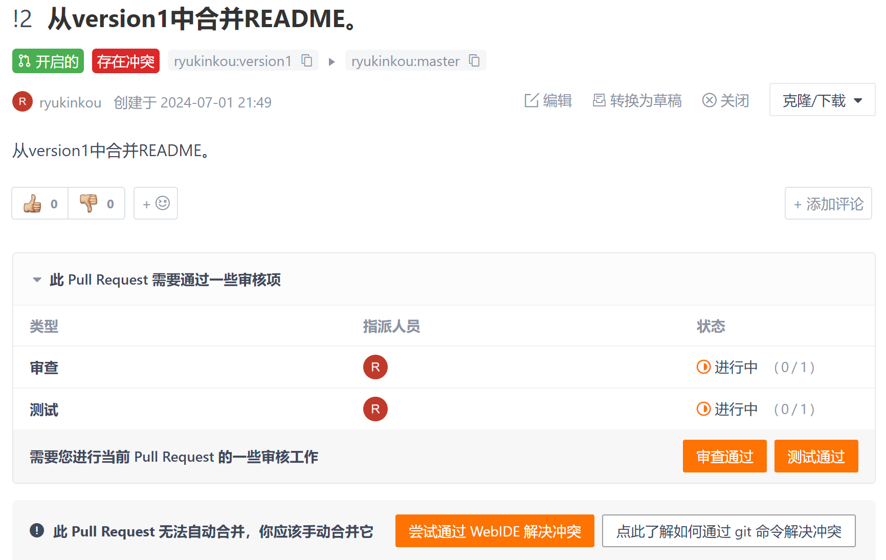
我们打开WebIDE，发现README.md文件同时被两个分支所更新。
version0在前，version1在后。符合我们的流程。
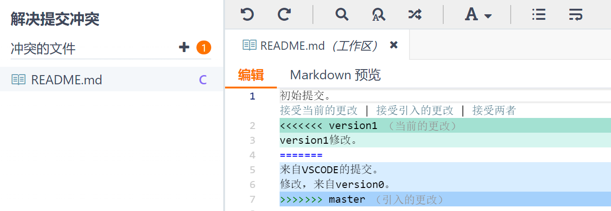
这里有三个选择，接受后来者的更新（当前的更改），不接受后来者的更新（引入的更改），和接受两者的更新。
通过选择并点击其中一项，即可完成冲突的消解。
这里我们选择接受两者更新。然后点击暂存更改。

最后点击提交。
这时候，我们回到审核界面，发现存在冲突已经消失，可以正常审核并合并了。
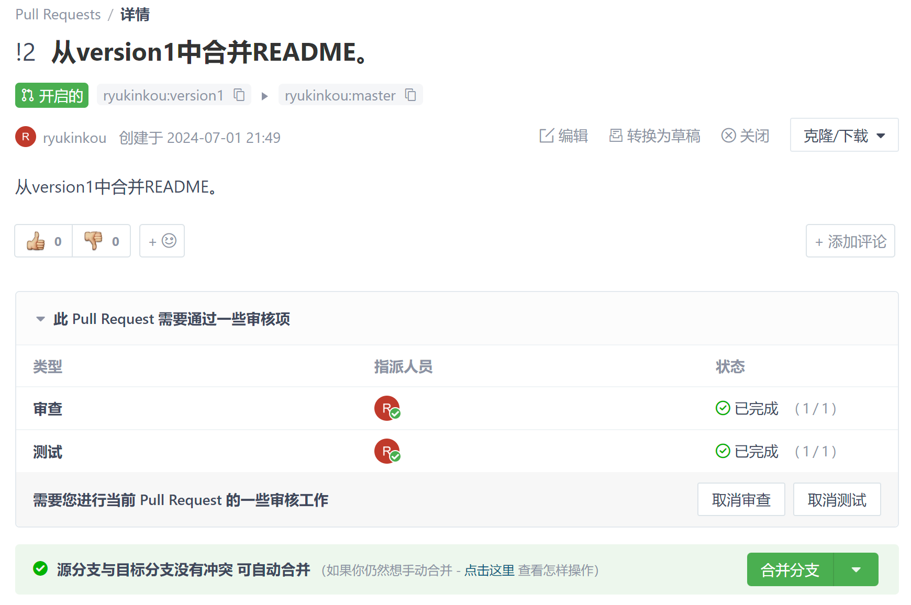
就这样，冲突消解就完成了。
为了防止随意提交到master主线导致代码劣化，我们可以在Gitee中设置分支保护规则。
设置 -> 保护分支添加保护分支master 或
main）设置分支保护后，所有开发者都必须通过分支合并请求的方式将代码合并到保护分支，不能直接推送。
通过创建分支并最后合并主线的方式进行代码的版本管理，乍一看比master主线直接提交要复杂和难以理解的多。
但它却最大程度的保证了提交代码的严肃性，确保了代码审核过程的刚性执行，防止了随意提交导致的代码劣化情况发生。
在训练有素的程序员中，大家既不想随意提交代码到master导致master主线被劣化或污染，也不想自己的功能模块被别人随意提交的master代码所劣化感染导致测试用例失效。
所以在修改代码时，创建一个仅属于自己的分支，在自己的分支上尽情的修改、发挥，把代码合并的流程交给代码审核者，完全不需要考虑上述的情景会发生。
这就是分支管理的魅力所在。
A: - 检查系统要求：Windows 10/11 - 确认下载的是Windows版本安装包 - 查看Git官方文档：https://git-scm.com/ - 检查是否有杀毒软件阻止安装
A: -
检查配置是否正确：git config --list -
确认使用了–global参数（全局配置） -
尝试重新配置：git config --global user.name "你的姓名" -
重启终端或IDE
A: - 检查是否已有SSH密钥：ls ~/.ssh/ -
使用ed25519算法：ssh-keygen -t ed25519 -C "你的邮箱" -
一路回车使用默认设置 - 检查.ssh目录权限
A: - 确认使用正确的SSH地址（git@gitee.com:…） -
检查SSH密钥是否正确配置 - 尝试使用HTTPS地址克隆 - 检查网络连接是否稳定 -
测试SSH连接：ssh -T git@gitee.com
A: -
确认已配置user.name和user.email：git config --list -
检查SSH密钥是否正确添加到Gitee -
尝试重新测试SSH连接：ssh -T git@gitee.com -
确认使用的是SSH地址而不是HTTPS地址
A: - 检查是否有提交权限 -
确认远程仓库地址正确：git remote -v -
先拉取远程更新再推送：git pull origin master -
检查网络连接是否正常 - 确认分支名称正确
A: - 先查看状态：git status -
查看冲突文件，寻找
<<<<<<<、=======、>>>>>>>
标记 - 手动编辑冲突文件，保留需要的内容 -
添加修改后的文件：git add <文件名> -
完成合并：git commit
A: - 查看本地分支：git branch -
查看所有分支（本地+远程）：git branch -a -
查看分支详情：git branch -v
A: -
切换到已存在的分支：git checkout <分支名> -
创建并切换到新分支：git checkout -b <新分支名> -
查看当前分支：git branch（当前分支前面有*号）
A: -
删除已合并的本地分支：git branch -d <分支名> -
强制删除未合并的分支：git branch -D <分支名> -
删除远程分支：git push origin --delete <分支名>
A: - 先查看状态：git status -
打开冲突文件，寻找冲突标记 - 手动编辑文件，选择保留的内容 -
添加解决冲突后的文件：git add <文件名> -
完成合并：git commit - 或者使用图形化工具解决冲突
A: - 确认Git已正确安装：git --version -
在IDEA中设置Git路径：File -> Settings -> Version Control -> Git
- 点击Test按钮测试Git是否可用 - 重启IDEA
A: - 确认在Git仓库目录中打开项目 -
检查左侧源代码管理面板（第三个图标） -
尝试初始化Git仓库：git init - 重启VSCode
A: - 检查是否只做了Commit没有Push -
IDEA：点击提交后选择”Commit and Push” - VSCode：提交后点击同步按钮 -
或者在命令行手动推送：git push origin <分支名>
A: - 检查网络连接 - 确认邮箱格式正确 - 检查用户名是否已被占用 - 尝试使用手机号码注册 - 查看Gitee帮助文档
A: - 确认公钥内容完整复制（从ssh-ed25519开始） -
测试SSH连接：ssh -T git@gitee.com -
检查私钥权限：chmod 600 ~/.ssh/id_ed25519 -
尝试重新生成SSH密钥
A: - 确认源分支和目标分支选择正确 - 检查分支是否有新的提交 - 确认仓库权限足够 - 尝试刷新页面重新创建 - 查看Gitee帮助文档
A: - 在PR页面查看变更内容 - 逐行审查代码，添加评论 - 检查代码是否符合规范 - 运行测试验证功能 - 批准或请求修改
A: - 核心功能必须完成：Git配置、仓库创建、分支管理、冲突解决 - 可以根据实际情况调整练习复杂度 - 如遇技术问题，及时向老师或助教求助 - 在报告中说明遇到的问题和解决方案
A: - 可以使用GitHub或GitLab代替 - 基本操作流程类似 - 在实验报告中说明使用的平台 - 核心是理解Git的工作原理
A: - 可以参考实验文档中的命令示例 - 重要的是理解每个命令的作用 - 必须能够解释Git的工作原理 - 独立完成实验报告
A: - 先仔细阅读错误信息，尝试自己解决 - 查看常见问题部分是否有解决方案 - 搜索相关技术文档和教程 - 向同学请教（但不要直接复制） - 及时向老师或助教求助 - 在实验报告中说明遇到的问题和尝试的解决方案
A: -
使用约定式提交规范：<类型>: <描述> -
常用类型：feat(新功能)、fix(修复)、docs(文档)、style(格式)、refactor(重构)、test(测试)、chore(构建)
-
示例：feat: 添加用户登录功能、fix: 修复登录错误
- 用中文或英文都可以，保持一致即可 - 提交信息要简洁明了
A: - 至少5次有意义的commit - 建议按照功能模块分阶段提交 - 每次commit对应一个明确的改动 - 不要把所有代码一次性提交 - 良好的提交历史有助于代码审查和版本回滚
A: - Git官方文档：https://git-scm.com/doc - Pro Git书籍：https://git-scm.com/book/zh/v2 - Gitee帮助文档：https://help.gitee.com/ - Git相关书籍：《Git权威指南》、《精通Git》 - 在线课程：Git入门与实战
A: - 当然可以！除了Gitee，还有很多选择 - 推荐尝试：GitHub、GitLab、Bitbucket等 - 对比不同平台的特点和优势 - 在实验报告中分享你的发现 - 注意平台功能可能有所不同